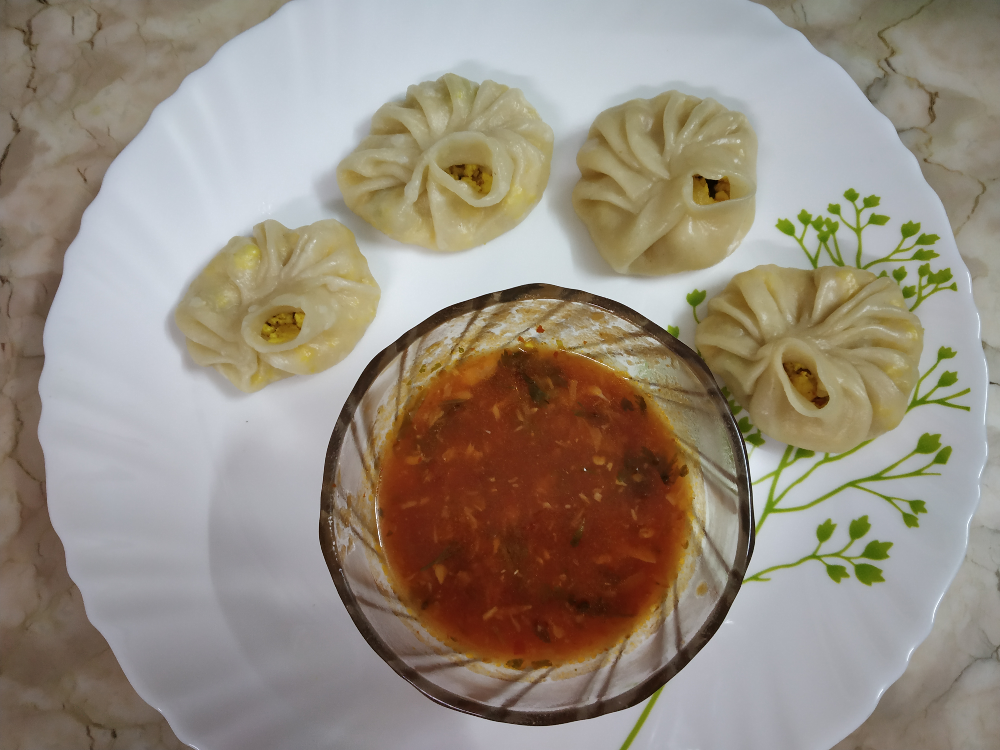

PANEER MOMOS
In frame is paneer momos which are prepared with virtually combination of
vegetables,paneer cheese.
Cheese: Usually fresh cheese (Paneer) or the traditional soft chhurpi is used.
This variety is common in India and Eastern Nepal.
INGREDIENTS :
500g paneer
1 tablespoon ginger garlic paste
any refined oil
cilantro/dhaniya leaves,1 green chilli
1 tablespoon Garam masala,lal mirch powder,turmeric powder
3 cups maida
salt as per taste
STEPS ONE CAN FOLLOW(if needed) :
First take pan and heat oil, then add chopped onion and ginger garlic paste and masalas and then mashed paneer
Then cook it well for 15 minutes and there should not be water content in the stuffing
After that make the dough of the momos by adding oil, salt to maida and making a soft dough
Then start giving any shape to momos ,meanwhile put the water on the lower portion of steamer and keep on the gas to heat
Then put the dumplings/momos in the steamer and steam for 5-6 minutes and it will be done, can serve with the chilli chutney